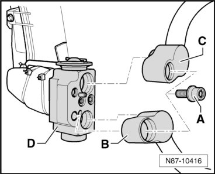
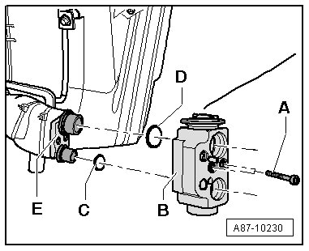
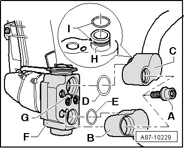

Rear Expansion Valve
Refrigerant Circuit
Rear Expansion Valve
- Extract refrigerant circuit, using A/C Service Station (VAS 6007A), only then open the refrigerant circuit.
- Observe notes, refer to--> [ Engine Compartment Refrigerant Circuit Components, 2 Zone and 4 Zone ] Engine Compartment Refrigerant Circuit Components, 2 Zone and 4 Zone
CAUTION!
There is a danger of ice-up.
Refrigerant leaks out if refrigerant circuit is not discharged.
Refrigerant must be extracted before opening the refrigerant circuit. If the refrigerant circuit is not opened within 10 minutes after extracting it, pressure may build up in the circuit again. The refrigerant must be extracted again.
- Remove side trim at left of luggage compartment.
- Remove the screws - A - (tightening specification: 10 ± 1 Nm).

- Disconnect the refrigerant lines - B - and - C - from the expansion valve - D -.
• Close all open lines and connections on expansion valve with suitable caps to avoid dirt and moisture from entering the system.
- Remove the screws - A - (tightening specification: 10 ± 1 Nm).

- Remove the expansion valve - B -.
• Seal all open lines and connections on evaporator with suitable caps to protect from damaged and avoid dirt and moisture from entering the system.
Installing
Installation is carried out in the reverse order, when doing this note the following:
- Replace the o-ring seals - C - and - D -.
- Make sure that O-ring seals - C - and - D - are properly seated on connecting pipes to evaporator.
- Place the expansion valve - B - on the connections on the evaporator.
• Coat the o-ring seals lightly with refrigerant oil before installing.
• The retaining plate - E - is installed on the connecting pipes. Make sure they are seated correctly when installing the expansion valve.
- Install the refrigerant lines - B - and - C - to the rear expansion valve.

- Install the screw - A - (tightening specification: 10 ± 1 Nm).
- Replace the o-ring seals - D - and - E -
- Check the alignment pin - G - (installed in the low pressure line connection or in the expansion valve - F -, not installed in all connections) and sleeves - H - on refrigerant lines for damage and proper seating.
• Coat the o-ring seals lightly with refrigerant oil before installing.
• Make sure the o-ring seals are seated properly in the groove - I - on the refrigerant line.
• Install refrigerant pipes such that they are not strained.
• Check the installation position of the refrigerant lines to the expansion valve they should not come in contact with other components.
- Re-install remaining components removed.
- Fill the refrigerant circuit.
- If necessary, check the function of the A/C system Vehicle Diagnosis, Testing and Information System VAS 5051 in "Guided Fault Finding" function.